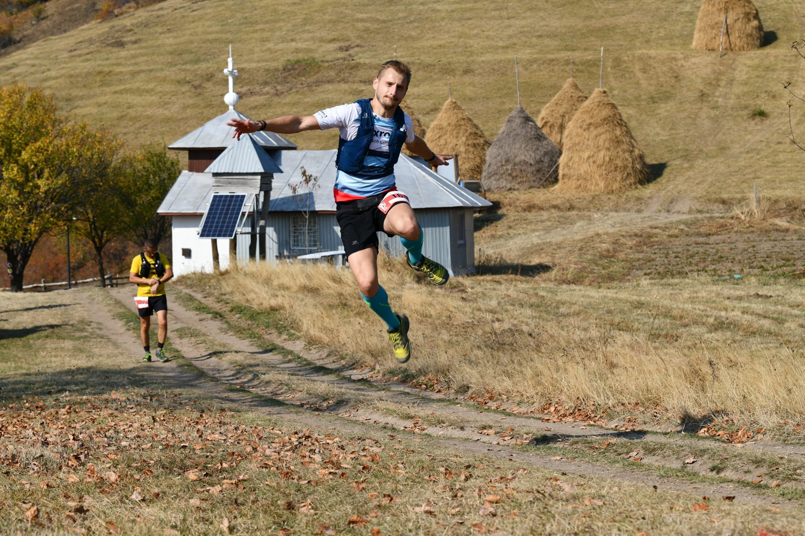
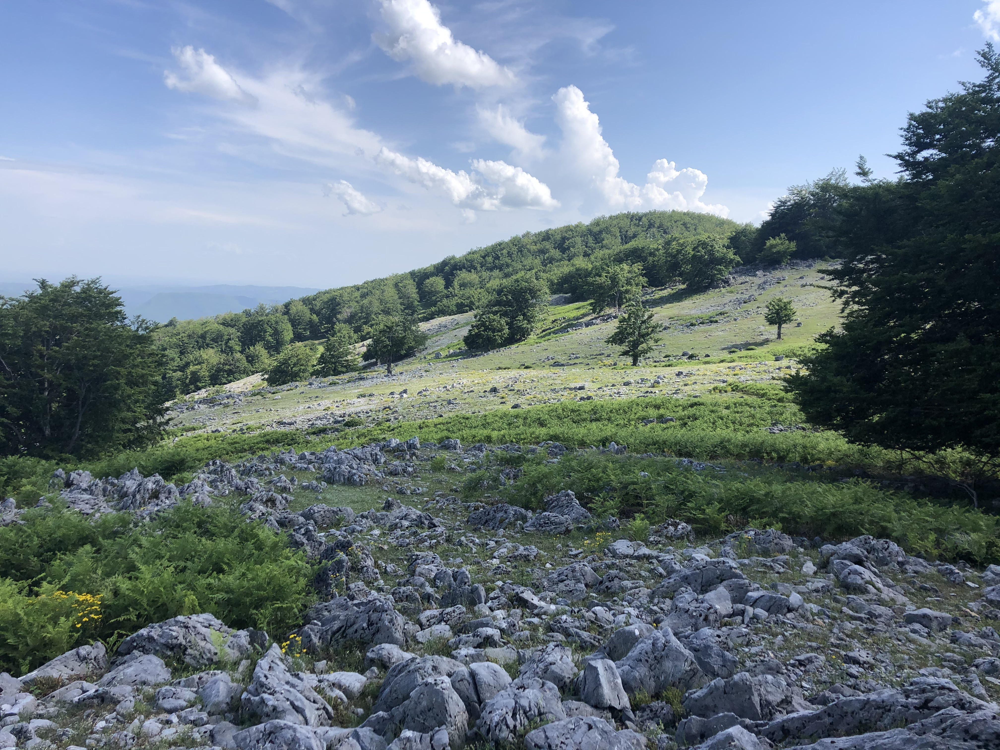

HERCULES MARATON
X
16 Octombrie, ora 9:00
Sărbătorește mișcarea
Înscrie-te și tu!
Vino în Valea Cernei, Herculane și participă la a X-a ediție Hercules Maraton alături de prietenii tăi
Știm. Și nouă ne-a fost dor.
Știm. Și nouă ne-a fost dor.
Perioada de înscrieri se încheie în 30 Septembrie.

Ce ți-am pregătit la
Hercules Maraton X
Hercules Maraton X
După o pauză în care ne-a fost dor de oameni, de mișcare și de atmosfera din fiecare an din Valea Cernei, revenim cu o ediție specială. Sărbătorim a X-a ediție Hercules Maraton și vrem să ne fii alături.
Sărbătorește
Revederea
Sărbătorește
Oameni
Sărbătorește
Natura
Sărbătorește
Emoția
Sărbătorește
Valea Cernei
Sărbătorește
Mișcarea
Sărbătorește
Hercules
Maraton
Maraton
X
Detalii Concurs
Așa cum te-am obișnuit, Startul îl vom da din zona Podului dinspre Vânturătoarea, la ora 9:00.
Traseul de Semimaraton urmează marcajul galben și are o lungime de X km și o diferență de nivel de X metri.
Traseul de Maraton este marcat cu cern roșu și are o lungime de X km, cu diferență de nivel de X metri.
Înscrierile se pot face până în data de X, inclusiv, iar înscrieri la fața locului nu vor fi posibile din motive logistice și de siguranță.
Participarea la concurs se face pe baza unei brățări pe care o primești doar după ce prezinți dovada de vaccinare, un test PCR negativ nu mai vechi de 72 de ore sau un test antigen negativ nu mai vechi de 24 de ore.
Categoriile de vârstă premiate în concurs vor fi următoarele:
Clasamentul general va fi împărțit în următoarele categorii:
- - Semimaraton Masculin
- - Semimaraton Feminin
- - Maraton Masculin
- - Maraton Feminin
Premiile pentru fiecare categorie vor consta în:
Descrierea traseelor
SEMIMARATON
Aici va fi descriere text, un paragraf vizibil, restul descrierii cu “see more”/dropdown
MARATON
Aici va fi descriere text, un paragraf vizibil, restul descrierii cu “see more”/dropdown
Cine suntem noi
ORANIZATORII HERCULES MARATON
Clubul Sportiv Alternative Timișoara a fost înființat în 2002 și de atunci are o activitate intensă în domeniul sporturilor montane, atât în ceea ce privește organizarea cât și participarea la competiții, expediții și ture montane.
Membrii fondatori ai clubului au fost implicați în alte ONG-uri și în activitatea montană cu mulți ani înainte de înființarea clubului, ei fiind principalii propulsori ai acestuia.
Clubul s-a remarcat în rândul comunității alpine din România ca fiind un club cu oameni deschiși și plini de inițiativă, care nu doar organizează dar și participă la competiții, pentru a promova mișcarea în domeniul sporturilor montane.
Politica clubului nu se bazează pe reguli de fier, ci mai degrabă pe o prietenie strânsă între membri. Fiecare membru își aduce aportul la activitățile sportive preferate și pe care le practică.
Membrii fondatori ai clubului au fost implicați în alte ONG-uri și în activitatea montană cu mulți ani înainte de înființarea clubului, ei fiind principalii propulsori ai acestuia.
Clubul s-a remarcat în rândul comunității alpine din România ca fiind un club cu oameni deschiși și plini de inițiativă, care nu doar organizează dar și participă la competiții, pentru a promova mișcarea în domeniul sporturilor montane.
Politica clubului nu se bazează pe reguli de fier, ci mai degrabă pe o prietenie strânsă între membri. Fiecare membru își aduce aportul la activitățile sportive preferate și pe care le practică.
Cum a fost la edițiile trecute
Hercules Maraton
Hercules Maraton



Sărbătorește și tu
Hercules Maraton X
împreună cu noi!
2. Alege proba la care vrei să participi
3. Fă plata și confirmă locul în concurs
4. Aleargă la Hercules Maraton X